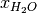
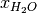

8. Introduction to AppPemfcTPSaturation¶
8.1. Introduction¶
AppPemfcTPSaturation implements a steady-state, non-isothermal, two-phase flow model based on a saturation equation. This class is used to solve the physical pheonoma on a complete membrane electrode assembly. The anode hydrogen oxydation reaction is modelled using an aglomerate model with dual-pathway kinetics and the cathode oxygen reduction reaction using an agglomerate model and the kinetics in Sun et al., EA, 2006. The membrane is modelled using a modified Springer model.
8.2. Governing equations¶
The model is based on the following assumptions:
- The fuel cell is at steady state and operates at constant pressure (pressure gradients are negligible).
- The gas mixtures are assumed to have ideal gas behaviour.
- The cathode is fed with humidified air.
- The anode is fed with humidified hydrogen.
- The gas diffusion layers are composed of a porous fibrous matrix.
- The catalyst layer is composed of three phases, viz, platinum supported on carbon, membrane electrolyte ionomer and open (void) space.
- In the case of an agglomerate catalyst layer model being considered, the electrochemical reaction occurs inside the agglomerates.
- The transport of reactants from the gas channels to the catalyst layer occurs only by diffusion of reactant gas to the agglomerate surface and then by dissolution and diffusion through the ionomer to the reaction site.
- The transport of water inside the electrolyte in the membrane and CL is modeled using Springer’s model including thermal osmosis effects.
- The membrane and gas phase in the CL are assumed to be in equilibrium throughout the CL, therefore they are related by means of the sorption isotherm.
- The transport of protons takes place only through the electrolyte, i.e. the Nafion and it is governed by Ohm’s law.
- The transport of electrons takes place only through the solid phase, i.e. the carbon fibers in the GDL and the mixture of carbon supported platinum in the catalyst layer, and is governed by Ohm’s law.
- Very long Brinkmann number flow is assumed, lead to negligible viscous dissipation, and hence neglected in the model.
- Gas and solid phases are in thermal equilibrium. This assumption is fairly valid since there is very high interstitial surface area, and convective heat transfer between these two phases would be sufficiently large such that temperature of all the phases at a particular location in the fuel cell will be approximately equal.
- Convection effects (including enthalpy transport by convection) are negligible for the fuel cell conditions discussed here.
The governing equations are
where the unknowns are, the oxygen mole fraction,  ; the water mole fraction, ; the electrolyte (membrane) and electronic potentials, and respectively; the membrane water content,
; the water mole fraction, ; the electrolyte (membrane) and electronic potentials, and respectively; the membrane water content,  ; and, the temperature,
; and, the temperature,  . The effective transport parameters
. The effective transport parameters  , ,
, ,  , , ,
, , ,  , and , are different in the membrane, GDL and CL and depend non-linearly on the design variables. Due to the solution methodology, all equations need to be solved in all the domains, i.e. GDL, CL and membrane. However, some equations are not necessary in some of the cell domains. This is addressed by making the unnecessary transport parameters zero.
, and , are different in the membrane, GDL and CL and depend non-linearly on the design variables. Due to the solution methodology, all equations need to be solved in all the domains, i.e. GDL, CL and membrane. However, some equations are not necessary in some of the cell domains. This is addressed by making the unnecessary transport parameters zero.
The source terms in the system of equations are given by
![S_{T} = \left\{
\begin{array}{cl}
\sigma^{eff}_s ( \vec{\nabla} \phi_s \cdot \vec{\nabla} \phi_s ) \quad & \text{in GDL and MPL} \\~\\
\sigma^{eff}_m ( \vec{\nabla} \phi_m \cdot \vec{\nabla} \phi_m ) \quad & \text{in Membrane} \\~\\
-(\nabla \cdot \vec{i}) \eta + \frac{\nabla \cdot \vec{i}}{2F} ( -T f_{ORR} \Delta \bar{S}_{overall} - \bar{H}_{lv} ) + \sigma^{eff}_m ( \vec{\nabla} \phi_m \cdot \vec{\nabla} \phi_m ) \\ \qquad + \sigma^{eff}_s ( \vec{\nabla} \phi_s \cdot \vec{\nabla} \phi_s ) +k_t \frac{\rho_{dry}}{EW} ( \lambda_{eq} - \lambda ) \bar{H}_{sorption} \quad & \text{in CCL} \\~\\
(\nabla \cdot \vec{i}) \eta + \frac{\nabla \cdot \vec{i}}{2F} ( -T (1-f_{ORR}) \Delta \bar{S}_{overall} ) + \sigma^{eff}_m ( \vec{\nabla} \phi_m \cdot \vec{\nabla} \phi_m ) \\ \qquad + \sigma^{eff}_s ( \vec{\nabla} \phi_s \cdot \vec{\nabla} \phi_s ) +k_t\frac{\rho_{dry}}{EW} ( \lambda_{eq} - \lambda ) \bar{H}_{sorption} \quad & \text{in ACL}
\end{array}
\right.](../_images/math/04f59f2392a1172c585c35e7cbeb446156d02e28.png)
and
where is given by the sorption isotherm reported by Hinatsu et al. at the corresponding water vapour activity value in the specific location in the CL.
8.3. Directory structure¶
The AppPemfcTPSaturation directory consists of the following folders:
1. template : This folder contains the default files for running all the examples in the other folders. Please do not modify this file as it will result in all tests failing. If you would like to create your own example either include this file to your simulation using the include command or copy the file to a different location.
2. Polarization_curve : This folder contains the two polarization curve studies: dry case and wet case. Both of them contain main_test.prm and data_test.prm files needed to run a simulation.
Note the data file includes the template find and adds the necessary modifications.
3. Jie_EA2016_article_data : This folder contains the files to reproduce the studies that will be published in JES paper, still await for the review. Note the data file includes the template find and adds the necessary modifications.
8.4. Setting up a AppPemfcTPSaturation simulation¶
In order to run OpenFCST, two files are needed that provide the necessary information for OpenFCST to execute:
- A main file: This file is used to select the appropriate: a) type of analysis, i.e. analysis, parametric study, polarization curve and optimization study; application; b) the nonlinear solver; c) data file name; and, d) several less critical parameters.
- A data file: This file is used to input all the input data used for the simulation for the application selected.
Both these files can either be loaded and modified via the openFCST graphical user interface (GUI) or modified as a text file.
8.5. Obtaining a polarization curve¶
Once the main.xml or .prm file has been modified, run the simulation.
8.6. References¶
- Secanell, B. Carnes, A. Suleman and N. Djilali, “Numerical Optimization of Proton Exchange Membrane Fuel Cell Cathode Electrodes”, Electrochimica Acta, 52(7):2668-2682, 2007.
- Secanell, K. Karan, A. Suleman and N. Djilali, “Multi-Variable Optimization of PEMFC Cathodes using an Agglomerate Model”, Electrochimica Acta, 52(22):6318-6337, 2007.